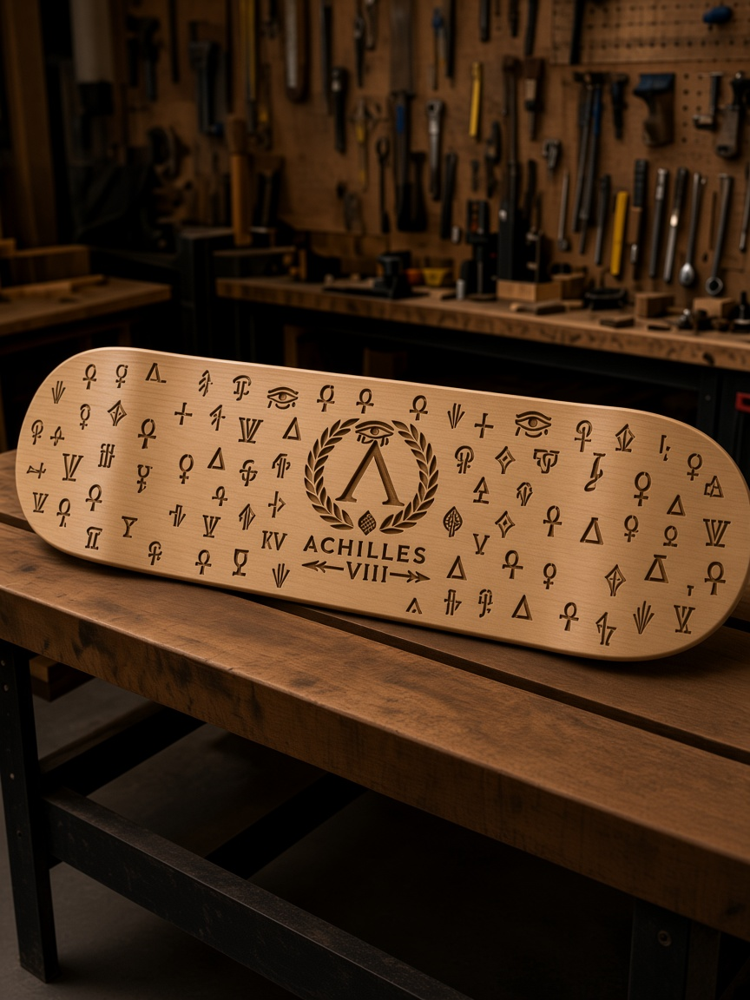
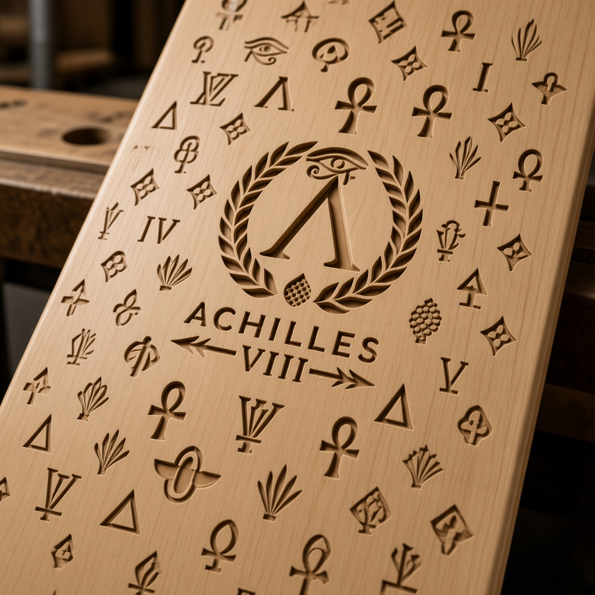
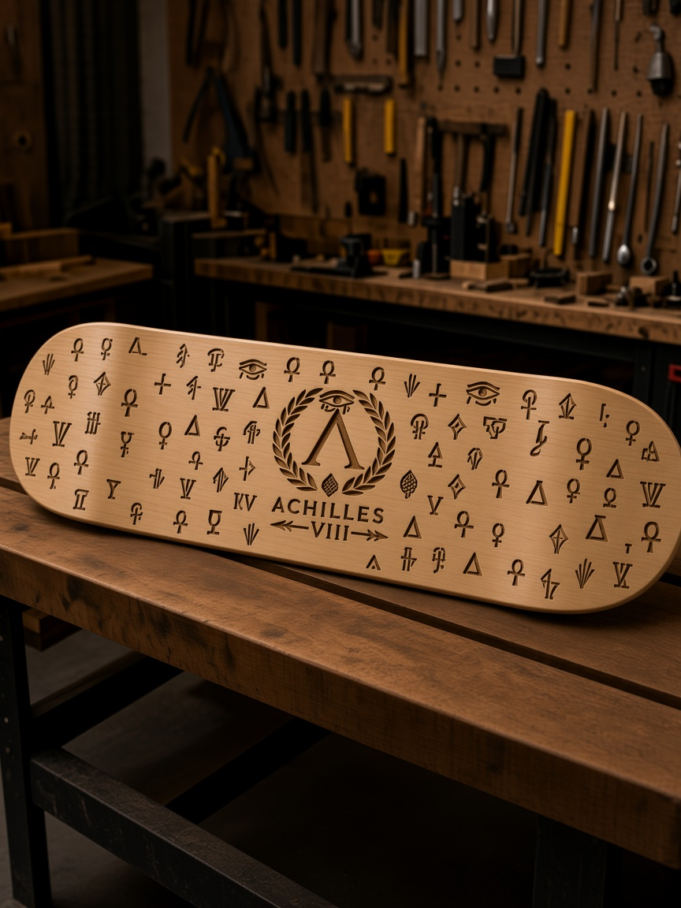

Download these
On iPhone: tap Download → Share → AirDrop to your MacBook.
Download ZIP pack SVG — main file only DXF — backup Setup notes Full READMEiPhone → Mac → CNC
- Tap SVG — main file and download it.
- Open the Files app → Share → AirDrop to your MacBook.
- On Mac, open Fusion 360 (not Diffusion).
- Import the SVG · units = inches · board = 8.5" wide.
- Manufacture → V-carve / Engrave · 60° V-bit · depth 1/8"–3/16".
- Post to WinCNC / CAMaster → cut on the Stinger III at Utah Tech.
What you’ll carve


Quick specs
- Width: 8.5 in
- Length: 32 in
- Machine: CAMaster Stinger III
- Software: Fusion 360
- Bit: 60° V-bit
- Depth: 0.125–0.1875 in